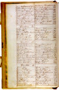

| . | How to Search Deeds |
|
 See Rev. Foster's deeds in the Archive. |
Deeds are records of land ownership and transactions. They can date back to before the American Revolution. They reveal much more than ownership, however. They may also give information about relative land values, about who could hold land, and about relationships between people. Deeds are useful to genealogists, those buying and selling land, and those wishing to find information about particular times or events. To find out the history of a piece of real estate, the researcher can work backward or forward from one deed to the next. Each deed tells who conveyed the right of possession of the land to whom. The list of owners in succession is called the chain of title. Trying to reconstruct the chain of title by searching through the deeds is called a title search. Deeds were recorded in a central place, according to law. This location
differed from state to state. For example, in Massachusetts and Maine,
deed registries are found in the courthouses of the counties in which
the transaction took place. Counties changed over time, so information
about deeds for one piece of land might be found in two or more locations.
In some other states such as Connecticut and Rhode Island, towns recorded
deeds. This was not always the case in the American West. Furthermore,
very early deeds might be found in central state archives. Deeds, probate
records, and court decrees--three kinds of records that can show property
changing hands --are usually found in the same location. Some registries of deeds have posted information, indexes, and all or
part of their holdings on their Web sites, available through the internet.
This saves traveling for researchers and wear and tear on the original
documents. Some sites require fees for access while others do not. If
you do not know the registry's Web address, start by looking for the official
state site and work from there.
|
| Deed Research Steps | |
| Note-taking
Form for Deed Research |
|
|